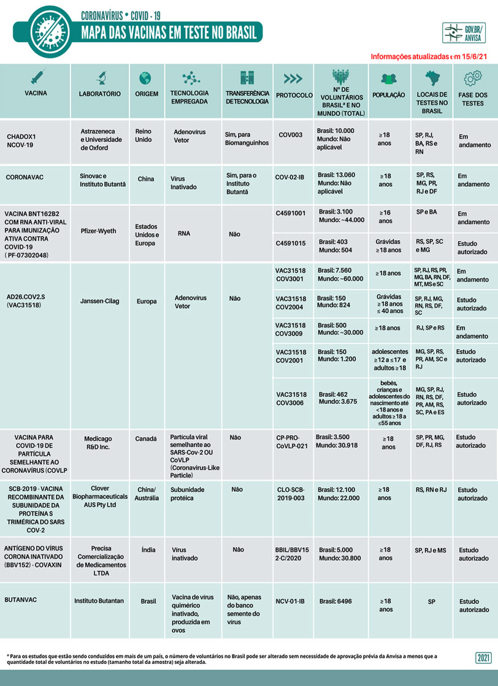
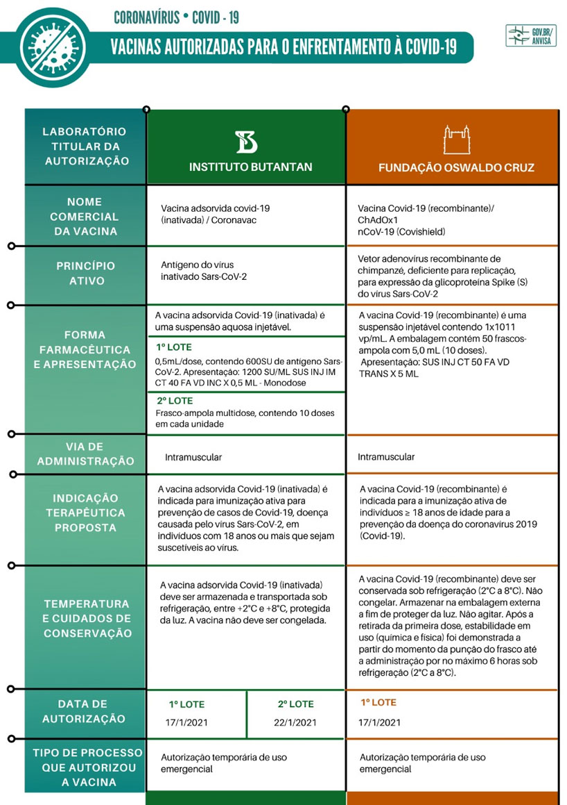

Principais vacinas e status de desenvolvimento
O cenário de desenvolvimento de vacinas tem se mostrado muito dinâmico com novidades em relação ao andamento das fases de desenvolvimento mudando diariamente. Os pesquisadores estão atualmente testando 64 vacinas em ensaios clínicos em humanos e 19 já chegaram aos estágios finais de teste. Pelo menos 85 vacinas pré-clínicas estão sob investigação ativa em animais.
Conheça as principais Vacinas, sua fase de desenvolvimento e status de uso
| Desenvolvedor | Tipo | Fase | Status |
|---|---|---|---|
| Pfizer-BioNTech | mRNA | 2/3 | Uso pleno ou emergencial em numerosos países; aprovação de uso emergencial concedida pela OMS em 31 de dezembro de 2020. |
| Moderna | mRNA | 3 | Uso pleno ou de emergência nos EUA, Canadá, União Europeia, Reino Unido e Israel. |
| Gamaleya | Adenovírus | 3 | Uso inicial na Rússia. Uso de emergência na Bielo-Rússia, Argentina. |
| CanSino | Adenovírus | 3 | Uso limitado na China. |
| Johnson & Johnson | Adenovírus | 3 | Ainda não aprovada para uso. |
| Oxford-AstraZeneca | Adenovírus | 2/3 | Uso emergencial em vários países, incluindo Brasil, Reino Unido, Índia, Argentina, República Dominicana e El Salvador. |
| Instituto Vector | Proteína | 3 | Uso inicial na Rússia. |
| Novavax | Proteína | 3 | Ainda não aprovada para uso. |
| Sinovac | Inativado | 3 | Uso limitado na China. |
| Sinopharm-Pequim | Inativado | 3 | Aprovado nos Emirados Árabes Unidos, Bahrein. Uso limitado na China. |
| Sinopharm-Wuhan | Inativado | 3 | Uso limitado na China e Emirados Árabes Unidos. |
Fonte: COVID-19 Vaccine Tracker - atualizado em 15/01/2021
A primeira candidata à vacina para Covid‑19, desenvolvida pela empresa Moderna (vacina de mRNA), entrou em testes clínicos em humanos com uma rapidez sem precedentes em 16 de março de 2020.
No Brasil existem quatro vacinas em testes em humanos e duas já foram aprovadas para uso emergencial: a vacina desenvolvida pela Oxford/AstraZeneca, que será produzida no Brasil pela Fiocruz, e a vacina desenvolvida pela Sinovac, que será produzida no Brasil pelo Instituto Butantan.


Veja o mapa das vacinas em teste no Brasil, publicado pela Agência Nacional de Vigilância Sanitária
Fonte: Anvisa
Você pode acompanhar as atualizações do Mapa das Vacinas em Teste no Brasil, disponível na página da Anvisa.
Vacinas em uso no Brasil
As duas primeiras vacinas para Covid‑19 foram aprovadas para uso emergencial em 17 de janeiro de 2021. Elas já estão sendo aplicadas nos públicos prioritários, em todo o Brasil.
O relatório com as Bases Técnicas para Decisão do Uso Emergencial está disponível na página da Anvisa. Ele apresenta o parecer da Anvisa para aprovação das vacinas.
As bulas, com as características detalhadas dos imunizantes estão disponíveis na página das instituições e a Anvisa publicou um resumo das características

O registro nos sistemas SI-PNI e E-SUS é de fundamental para a integralidade e longitudinalidade do cuidado e é preciso ser garantido, durante a campanha de vacinação para Covid‑19.
Veja as características das vacinas autorizadas:
Fonte: Anvisa
Consulte as bulas completas na página das instituições


Produção acelerada de vacinas
O esforço global de P&D em resposta à pandemia do Covid‑19 é sem precedentes, em termos de escala e velocidade. Isso representa uma mudança fundamental na trajetória tradicional de desenvolvimento de vacinas, e exige novos paradigmas de desenvolvimento, envolvendo paralelismo em diversas fases (estudos pré-clínicos, clínicos e escalonamento), processos regulatórios inovadores e capacidade de produção em larga escala. O Dr. Akira Homma, pesquisador e professor emérito da Fiocruz, comenta sobre o processo acelerado de produção de vacinas, os investimentos no desenvolvimento e produção, e da segurança, eficácia e qualidade desses imunobiológicos.